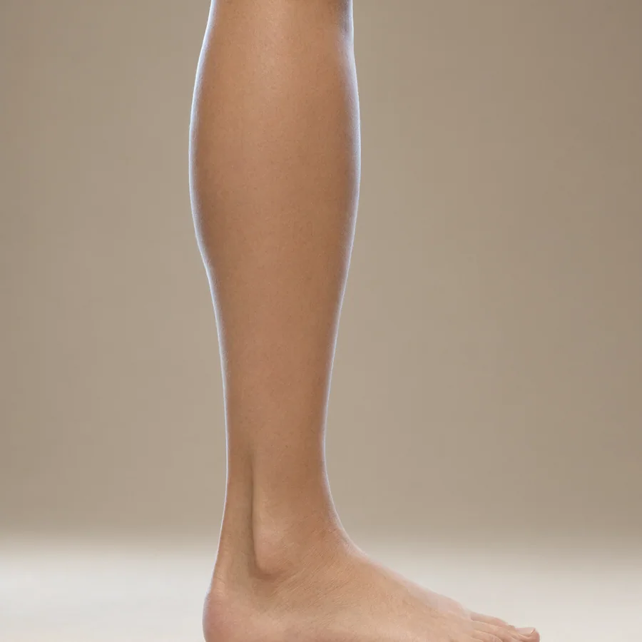
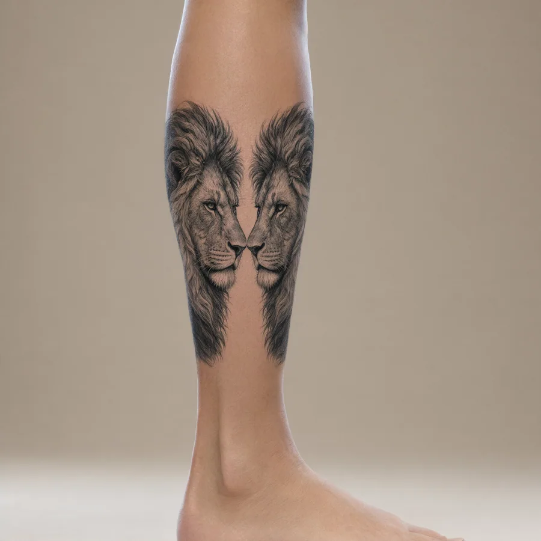
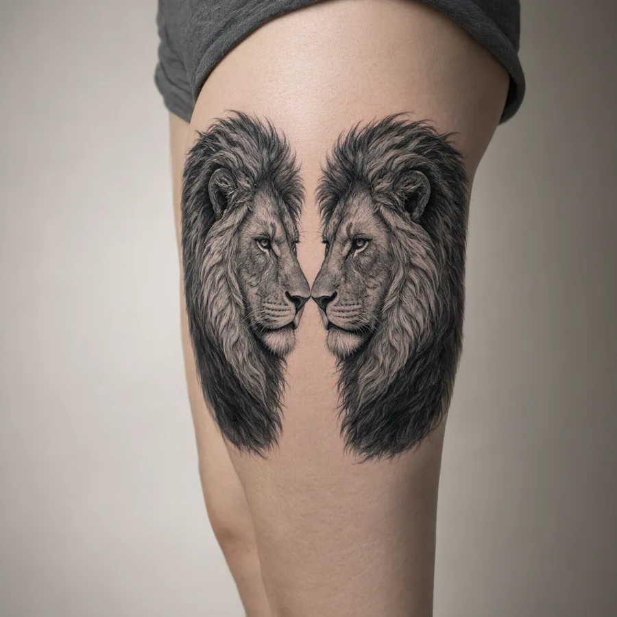
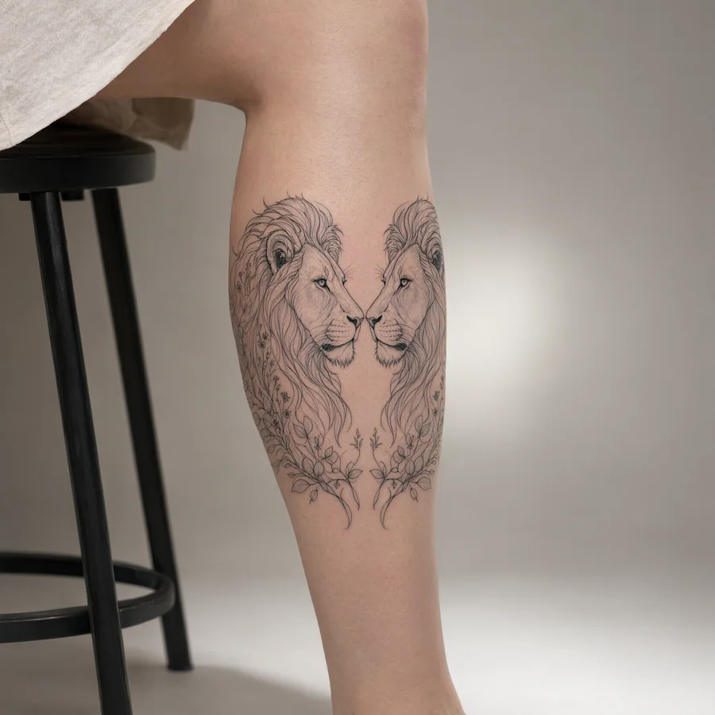
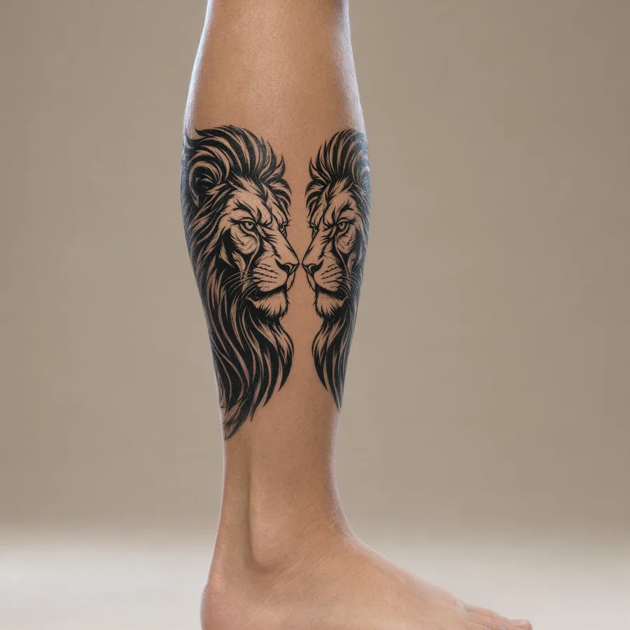
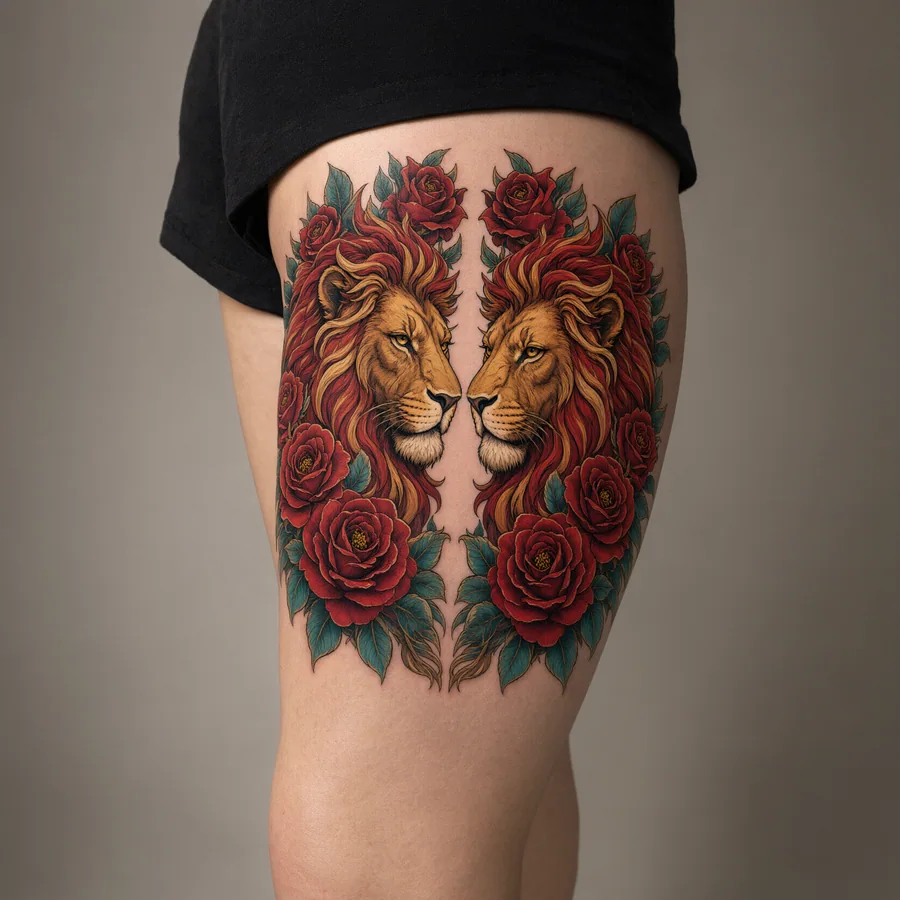
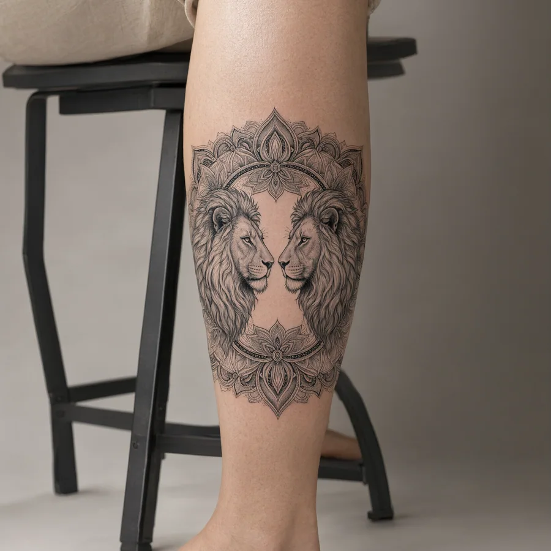
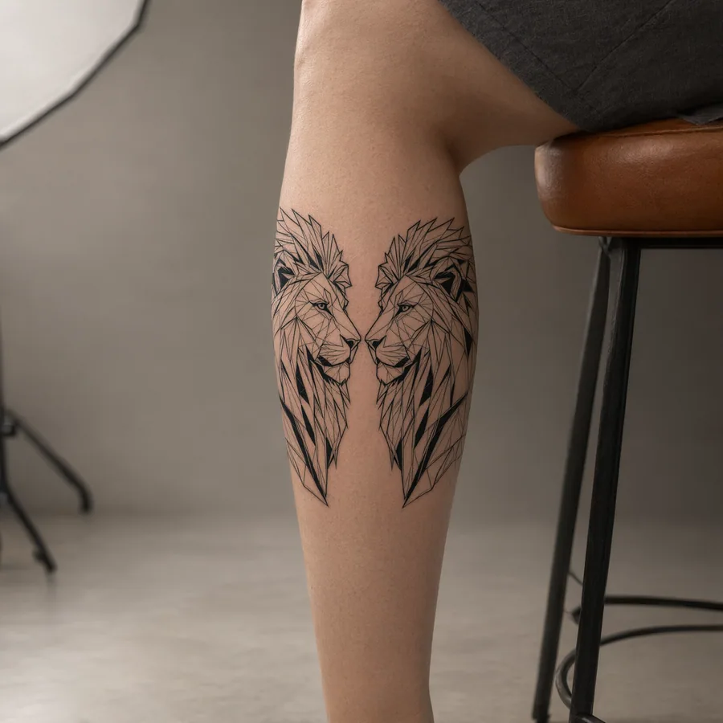
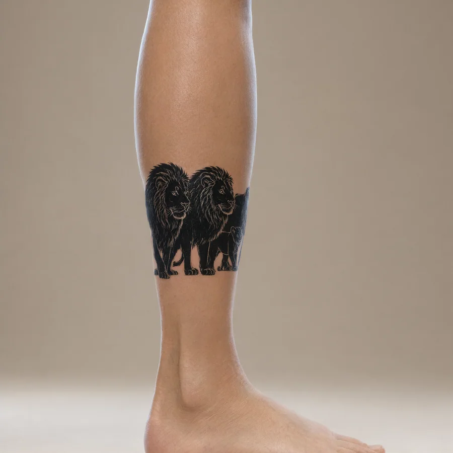

Cuántos leones cuenta tu pierna
Una composición de grupo no es "más de lo mismo": es otra historia. Estas dieciséis van del duelo simétrico al retrato familiar — cada una con su geometría pensada para la pierna.
Viendo 0 composiciones ·
{kind=link}
{kind=link}
{kind=link}
{kind=link}
{kind=link}
{kind=link}
{kind=link}
{kind=link}
{kind=link}
{kind=link}
{kind=link}
{kind=link}
{kind=link}
{kind=link}
{kind=link}
{kind=link}
Estas composiciones son bocetos de referencia hechos para esta guía — la versión definitiva la dibujará tu artista para encajar en tu pierna.
La manada, sobre tu piel
La manada ya se puede ver en tu piel: sube una foto de tu pierna, ajusta la composición y pídele a la IA el acabado real —escala, luz y caída sobre el músculo— antes de que la aguja decida. Empieza gratis: la cuenta se crea con tu email en menos de un minuto.


La pierna completa, en una foto
Pantorrilla o pierna completa, de frente o de perfil, con luz natural.
Elige tu composición
Parte de la galería o de tu propia idea: tú decides la composición.
La escena completa, en escala real
Formato, posición y encaje de toda la escena, sobre tu pierna.
Qué significan los tatuajes de leones en la pierna

Un león cuenta una historia; varios cuentan una relación. Dos leones frente a frente hablan de un vínculo — dos fuerzas que se miran de igual a igual. La familia con crías habla de linaje: lo que se protege y lo que se hereda. Y la manada entera habla de equipo: nadie caza solo.
En la pierna, estas composiciones tienen un aliado: el eje vertical. Alineados de rodilla a tobillo, los leones se leen como una sola pieza — y el movimiento al caminar los presenta de a uno, por turnos.
¿Y si la historia es de a uno? El león solitario tiene su guía en Tatuaje de león en la pierna para mujer, y la leona en Tatuaje de leona en la pierna. Aquí se trata de sumar.
Estilos de tatuajes de leones en la pierna que envejecen bien
Las composiciones pierden o ganan según cómo se reparte el negro. Estas familias aguantan años — y viajes en bus, playa y gimnasio:
Realismo
Dos retratos realistas piden más espacio que uno: calcula las dos cabezas completas, no solo las caras. La recompensa: profundidad de escena, casi un cuadro sobre la piel.

Fine line
Dúos finos, limpios, casi aéreos. Aguanta bien si el artista refuerza los trazos exteriores — y es la forma más elegante de llevar dos leones sin ocupar media pierna.

Blackwork
La simetría en bloque: dos siluetas negras espejadas, con vacíos que respiran. La opción más gráfica, la que mejor se lee a distancia, y la que envejece sin drama.

Neotradicional
Dos cabezas con rosas, contorno grueso y lectura clara. La composición se reparte como un escudo: equilibrada, frontal, con personalidad clásica que no pasa de moda.

Ornamental
Dos leones dentro de un mandala: la geometría ordena la escena y la vuelve bisutería grande. Si te gustan los símbolos con marco, este lenguaje los lleva un paso más allá.

Geométrico
Líneas rectas y facetas para dos cabezas. Moderna, precisa, y sorprendentemente perdonadora con los años porque no depende de la textura, sino del trazo.

Silueta
La manada en negativo: sombras que caminan. Contraste máximo para contar grupo sin caras — la opción cuando quieres el mensaje y no el retrato.
Aviso de cuentas: cada león extra suma tinta y suma sesión. Por eso conviene planificar el reparto del negro desde el boceto — una composición se da por terminada cuando el conjunto se lee, no cuando se cubre más piel.
Dolor, precio y curación de tatuajes de leones en la pierna

Dónde repartir el dolor
Reparte la primera sesión por zonas amigables: muslo exterior y panza de la pantorrilla primero; interno de muslo, espinilla y tobillo, para más adelante. Cargar todo el contorno en una sentada larga no es heroísmo — es una peor curación.
Cuánto cuesta una composición
Cada león extra arrastra más tinta, más horas y probablemente más de una sesión: no es "lo mismo más grande", es otro presupuesto. Antes de agendar, pide el desglose por hora y cuántas sesiones calcula para la composición completa.
La curación de una pieza larga
Una composición que cubre muslo y gemelo es una herida larga: divide la curación por tramos y no fuerces la pierna los primeros días. Lo básico no cambia — limpieza suave, crema sin perfume, cero piscina — pero la constancia pesa más cuando la superficie es grande.
Cómo se reparte en el cuerpo
La pierna manda: el punto natural para partir es rodilla o tobillo, y desde ahí hacia arriba o hacia abajo. Las piezas pares suelen buscar simetría; las familias, un triángulo. Lleva la idea a escala real: proyectada sobre la piel, se ve todo lo que el papel esconde.
Cómo elegir una composición de leones, paso a paso
Define la relación, no los leones.
¿Pareja, familia, manada, duelo? La relación es el diseño: ella decide número, posturas y simetría. Los leones son el reparto.
Decide cuánto mide la escena.
Dos retratos realistas piden espacio de verdad; dos siluetas de línea viven en mucho menos. Arranca por la medida total disponible — de rodilla a tobillo manda el límite.
Elige el eje de lectura.
¿De arriba abajo siguiendo la pierna, o repartida en dos paneles que se miran? El eje define cómo se mueve la historia cuando caminas — y se decide en el boceto, no en la silla.
Un estilo para toda la escena.
Mezclar realismo con ornamental dentro de la misma composición rara vez suma. Elige un lenguaje gráfico y deja que los leones hablen dentro de él.
Pide ver el conjunto proyectado.
El mismo ritual de toda pieza grande: stencil sobre la piel, lectura de pie y en movimiento antes de encender la máquina. El conjunto se lee o no se lee — eso lo ves ahí.
Si dudas, míralo antes en digital.
Una composición grande es la que más agradece una prueba sin tinta: proporción, ángulo y peso visual sobre tu propio cuerpo. Ya puedes hacerla: el probador virtual te la muestra entera en minutos.
Preguntas frecuentes sobre los tatuajes de leones en la pierna
¿Qué significa tatuarse dos leones?
Dos leones frente a frente suelen contar un vínculo: pareja, hermanos, dos fuerzas que se respetan. Si van en la misma dirección, el mensaje es equipo. No hay un código único — la posición (mirándose o caminando juntos) hace la diferencia.
¿Cuántos leones caben en una pierna?
Más de los que crees, si se organizan. Con siluetas y línea fina, una pantorrilla entra para tres o cuatro; con retratos realistas, un dúo ya pide la pierna entera. La regla es simple: cada león necesita su aire — sin espacio entre ellos, la escena se convierte en mancha.
¿Familia de leones o manada?
La familia es retrato: papá, mamá, crías, con roles claros. La manada es paisaje: muchas siluetas, sin caras, más grupal. La familia va mejor en piezas de detalle; la manada, en silueta de contraste.
¿Se puede hacer en dos leones si son para una pareja?
Es la versión más popular: cada uno se tatúa uno, en la misma zona, con el mismo trazo. Así la composición se completa cuando están juntos. Funciona bonito cuando cada uno lleva su mitad — en pantorrillas gemelas, por ejemplo.
¿La pierna se ve cargada con varios leones?
Depende del contraste, no de la cantidad. Una manada en silueta puede leerse más ligera y más limpia que un solo retrato cargado de detalle. Lo que nunca perdona: elementos sin aire, de cualquier estilo.
¿Cuánto tiempo tarda una composición?
Un dúo de siluetas: una sesión de cuatro a seis horas. Retratos realistas en pareja: dos o tres sesiones. Familias y manadas de detalle: proyecto de mes largo, en tramos que respetan la curación. Que el plan incluya los descansos, no solo las horas.
¿Duele más una composición grande?
Duele por zonas, no por tamaño. Cubrir más piel significa más horas sobre puntos distintos — y el cansancio en la recta final se nota más que el dolor en sí. Por eso los tatuadores buenos parten las piezas largas y nos mandan a casa.
¿Puedo probarme la composición completa antes?
Ya se puede: la escena completa aparece sobre tu pierna, a escala y con luz real, antes de tinta. La cuenta es gratis y la primera prueba también. Eso sí: en composiciones grandes, un ángulo mal puesto se ve en el primer espejo — el stencil del estudio sigue siendo clave.
¿Dónde duele menos un tatuaje en la pierna?
Siempre en las zonas con músculo de colchón: muslo exterior y panza de la pantorrilla. Las que están pegadas al hueso — muslo interno, espinilla, tobillo — suben la intensidad, sobre todo en sesiones largas. Si es tu primera pieza grande, empieza por las amables y deja las duras para cuando ya tengas callo.
Dos leones, una familia o una manada: cuéntalo completo.
Estudia las composiciones, elige tu reparto y agenda con el boceto claro.